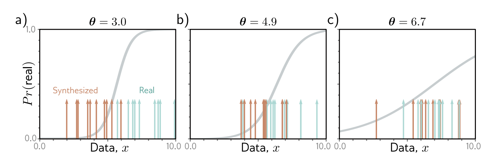
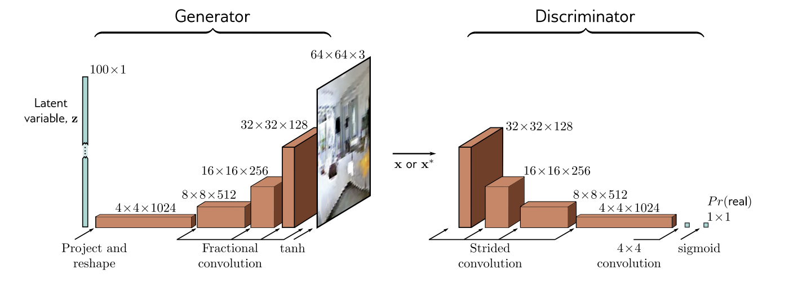
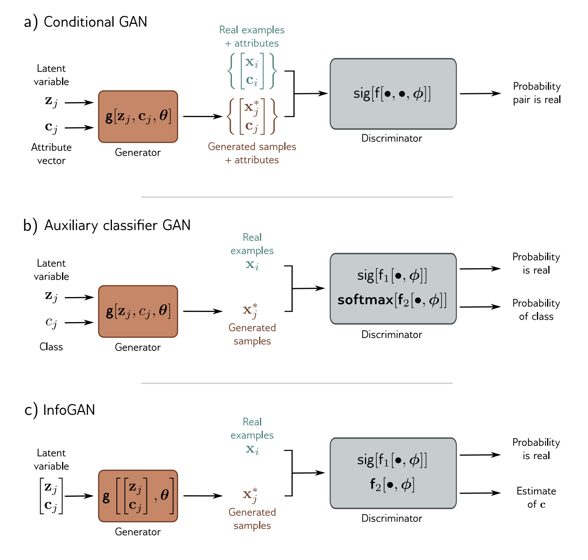
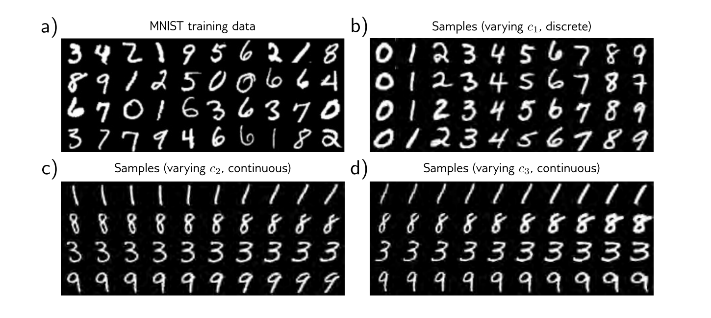
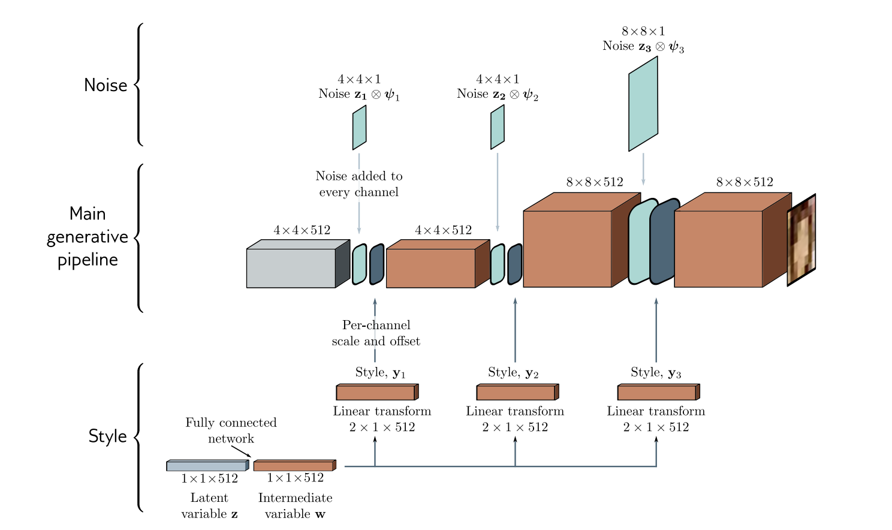

C15.Gnerative adversarial networks
问题 在图像的维度进行真实世界图像的概率密度估计是一件难以想象的事情.
1.GAN idea
符号 真实世界的训练数据为$\{\bold x_i\}$, 生成式模型想要得到new sample $\{\bold x^*_i\}$ by 两个步骤: ①选择一个latent variable $\bold z_j$, 这里可以是简单的高斯分布的采样. ②将latent variable 传递给名为*generator* 的network得到new sample $\bold x_j^* = \bold g[\bold z_j, \boldsymbol \theta]$.
另一个网络名为 discriminator 用于识别real example和new example, $f[•,\bold ϕ]$.
1.1.训练思路
discriminator 根据$\{\bold x_i\}, \{\bold x^*_i\}$的真假标签调整参数$\boldsymbol \phi$, 得到用于鉴别真假的二分类分布$f$, generator 则随后调整参数$\boldsymbol \theta$ 欺骗分布$f$, 并预测出新的$\{\bold x^*_i\}$, 如此循环往复.
e.g. 当$\bold x_i\in \R^1$, $g[z_j, \theta]=z_j+\theta$是个简单的平移, $\{z_j\}$取样自一维高斯分布, 训练过程如下:

横轴橙色数据是不断生成的$g[z_j, \theta]$, 纵轴是预测概率$f$, 可见第三轮的时候概率变化平缓, 真假分辨更难了.
Rmk GAN和EM算法很像.
1.2.loss function
首先训练discriminator, by cross-entropy loss function:
其中, $y_i\in\{0,1\}$, $sig[•]$是对数sigmoid函数, 假设真标签为$1$, 假标签为$0$, 可得:
再根据最大化分类的误差, 代入$x_i^*=g[z_i,\theta]$ 训练generative model:
最终可以得到如下损失函数:
损失函数$L[\boldsymbol \theta]$在原式的基础上加了一个负号, 去掉了一个常数项.
Rmk loss func必须要求有一个一定数量的batch.
1.3.训练过程
Nash equilibrium(纳什平衡) 同时最大最小化一个函数会最终达到某个平衡, 分布$f=0.5$
1.4.deep convolution GAN
常见的图像GAN如下:

latent variable 直接从均匀分布采样得到, 随后做了一个线性变换, 之后的upsampling采用fractional convolution, 即使用步长为0.5的convolution, 相当于transposed convolution.
Discriminator最终得到的是一个一维概率密度函数$Pr\in\R$.
$\textcolor{red}{\bold{Warnning}}$ Latent variable真的是这样吗, 和第一章讲的 latent variable 不一样诶, 这样的 latent variable 和图像有什么关系?
问题 这样的GAN很难训练, 要正常训练必须用到许多优化和意义不明的参数调整: (i) use strided convolutions for upsampling and downsampling; (ii) use BatchNorm in both generator and discriminator except in the last and first layers, respectively; (iii) use the leaky ReLU activation function (figure 3.13) in the discriminator; and (iv) use the Adam optimizer but with a lower momentum coefficient than usual.
2.improving stability by loss func
2.1.GAN loss function analysis
对discriminator的损失函数添加一个均值:
此时, 对于任意一个未知标签样本$\tilde x$的真实标签概率为:
其中, $Pr(\bold x^*),Pr(\bold x)$是全局的概率, 将上面的$sig[f[]]$代入到原式:
上式加上一些系数和常数项就和 Jensen-Shannon divergence 长得很像了:
上式的两项中, 前者表示精度, 后者表示覆盖度, (相当于查准率和查全率).
generator的损失函数没有第二项, 这可能是导致GAN生成的数据过于相似的原因.
2.2.梯度消失
如果生成的sample和real sample之间毫无交叉, discriminator会表现的很好, 但generator的训练会出现梯度消失, 即无论往哪个方向下降损失函数的变化都很小.
2.3.Wasserstein distance(不理解)
假设两个分布$Pr(x)$和$q(x)$, 分为$K$个区间(bin), 区间用$i$或者$j$表示, 则想象区间$i$到区间$j$的cost是下标之差$|i-j|$, 区间$i$到区间$j$上分布的transport plan为$P_{ij}$, 则Wasserstein距离定义为:
其中, transport plan有如下限制:
所以, 要得出$D_w$, 就得把transport plan矩阵$\bold P$解出来.
求解P 该最优化问题是一个线性规划问题(linear programing problem):
问题的原形式和等价形式(dual form)可以写为:
| primal form | dual form | | ----------------------------------------------- | --------------------------------------- | | minimize $\bold c^T \bold p$ | maximize $\bold b^T\bold f$ | | such that $\bold A\bold p=\bold b, \bold p\ge0$ | such that $\bold A^T\bold f\le \bold c$ |
其中, $\bold p$是矩阵$\bold P$中的行向量或列向量, $\bold c$是区间cost的向量, $\bold A\bold p=\bold b$可以表示上述两个限制. 对系数做一点调整就可以转化为一个通用的线性规划问题(dual form), 转化的证明omitted$\textcolor{red}{\bold{Error}}$.
可以写出$\bold A, \bold b, \bold c$的表达式$\textcolor{red}{\bold{Error}}$怎么写呢, 则原问题写为:
有如下限制:
线性规划问题有成熟的算法解决, 这里省略omitted.
2.4.连续形式的Wasserstein distance(不理解)
多维连续分布的Wasserstein距离可以写为:
$\pi(\bold x_1,\bold x_2)$表示了点$\bold x_1$到点$\bold x_2$上分布的transport plan.
线性规划的等价形式写为:
限制为:
3.更多优化
progressive growing 在训练过程中逐渐增加generator和discriminator的深度,
min- batch discriminator(不理解)
truncation latent variable进行合适的调整, 会在增加图像质量的同时降低图像的多样性, 进一步在这两者间进行trade-off.
4.conditional generation
GAN不能选择生成图像的属性, 除非训练多个不同的GAN, 这是由于GAN只能一次性生成一个分布上的所有可能图像. Conditional generation models provide us with this control.
4.1.conditional GAN
使用一个向量 $\bold c$ 作为属性值, 传入generator和discriminator中: $\bold g[\bold z, \bold c, \boldsymbol \theta] = (\bold x^*, \bold c),\bold f[\bold x, \bold c, \boldsymbol \phi]=Pr(\bold x,\bold c)\in\R$, 生成数据前需要人工指定一个确定的c, 而真实数据需要自带真实标签c, 最终 $\bold f$ 得出的是数据对$(\bold x, \bold c)$真实的概率.
z如何与c作用, 如果$z\in\R$, c可以直接接在z后面, 如果$x\in\R^2$, c可以先upsampling再插入x的channel中.
注意generator输出的c和输入的c是一样的.

4.2.Auxiliary classifier GAN(ACGAN)
这一模型的数据是不带属性c的, 如上图, 只有generator的输入带c, discriminator的输出是一个$\R^{C+1}$的向量, 其中$\R^C$用来表示各个属性的概率, $\R$用来表示图像的真实概率.
4.3. info GAN(不理解)
不进行人工标记c, generator输入的c是随机分布, discriminator判断真实的同时还直接输出预测的c.($\textcolor{red}{Error}$这个c是如何进行监督的? 可能作为x的一部分放进去了)

上述图bcd是生成的结果, 每列分别是c1c2c3的不同值, 可见该网络不仅进行了数字分类, 还得到了类似于倾斜角度和粗细的分类.
5.image translation(omitted)
5.1.Pix2Pix
灰度图转RGB
contant loss + discriminator loss (for synthesize pair and real pair)
5.2.Adversarial loss(敌对损失)
低分辨率转高分辨率
contant loss + VGG loss + adversarial loss (discriminator loss for synthesize output and real image)
5.3.CycleGAN
现实图转莫奈油画风格图
contant loss + adversarial loss(同上) + cycle-consistency ()
6.Style GAN(omitted)
使用特殊的方式在训练中运用初始的latent variable, 使得latent variable具有一定的意义, 在训练完成后对latent variable进行改变可以得到有意义的图像输出的改变.
初始设置两个latent variable, 分别调控图像的noise 和 style, 这两个latent variable在训练中的使用方法如下图:
